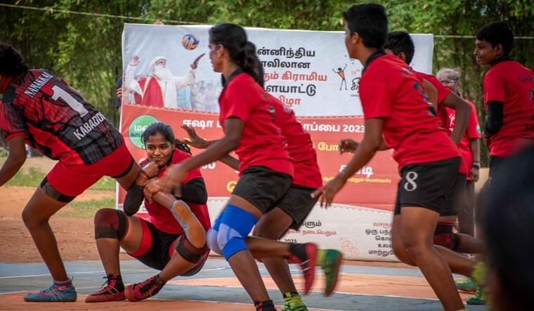
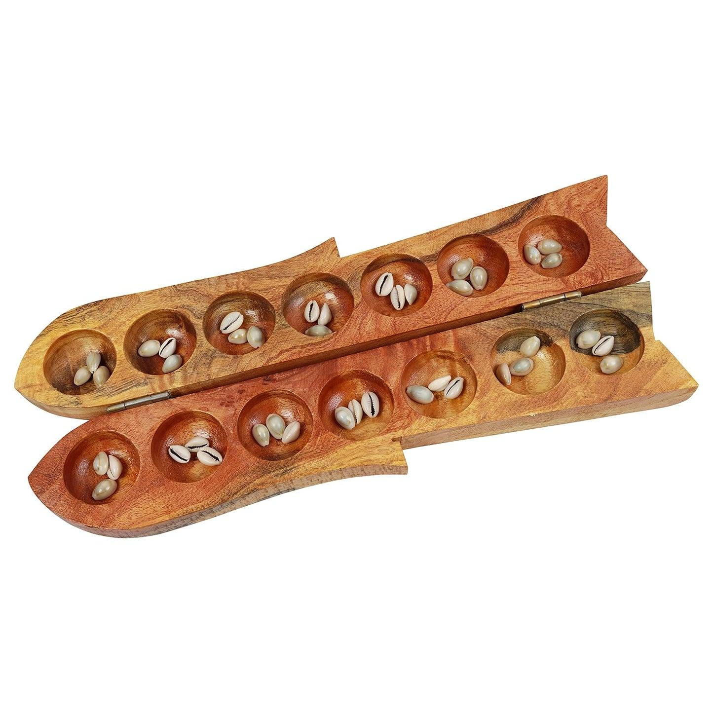

Welcome to the World of Tamil Traditional Games!

Tamil Nadu has a rich heritage of games played in villages, homes, school grounds and festival celebrations. These games are more than entertainment: they reflect creativity, teamwork, memory, balance and community life.
Why Are Traditional Games Special?

Many traditional games use simple materials such as seeds, wooden boards, spinning tops and open spaces. Children and adults learn by playing together, sharing rules and encouraging one another. Some games develop concentration and planning, while team games build communication and cooperation.
Today, learning about these games helps us preserve local knowledge and pass cultural traditions to the next generation. They also remind us that enjoyable play does not always need expensive equipment or digital devices.
Popular Game Experiences
- Team spirit: discover the teamwork and strategy of Kabaddi.
- Thinking skills: explore the counting and planning involved in Pallanguzhi.
- Family fun: learn about board games such as Paramapadham.
- Outdoor play: understand the history of traditional spinning tops.
- Art and discipline: learn how Silambam is taught as a traditional martial art under trained guidance.
Visit our Traditional Games page to explore individual games, or read the Game Guide for ideas on preserving and enjoying them responsibly.